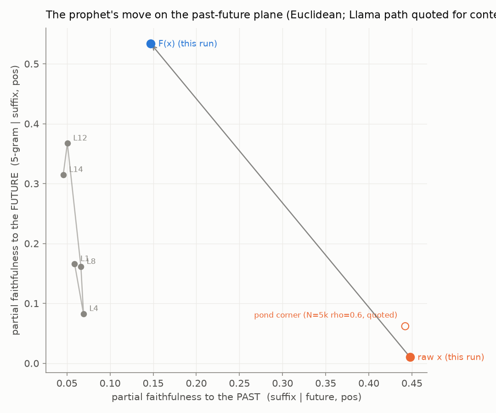

Future-Keyed Geometry Without Predictive Gain: A Linear Bridge to a Time-Reversed Reservoir
download whitepaper (pdf)
- registered 2026-08-10
- internal run log #3–#4
- 4 seeds, all CIs on the registered sides
- replicated before publication
- promoted 2026-08-11
- amended 2026-08-12 after audit
Abstract
We construct a future-keyed representation from a frozen reservoir. A second, independent reservoir reads each text segment backward, so its state encodes the future of that segment; a single ridge regression — with no gradient training anywhere — maps the forward reservoir's states onto those of the time-reversed reservoir. The bridged states F(x) land far into the future-keyed region of the past–future plane: partial future-keyedness 0.51–0.55 across all four seeds, above the most future-keyed layer we have measured on a large trained transformer (0.37 — a cross-system comparison, with the caveat stated plainly below), while past-keyedness drops from 0.43–0.45 to 0.15–0.16. Nevertheless F(x) predicts the next character 0.058–0.067 bits worse than the raw states from which it was computed, in every seed. Future-keyed geometry is obtainable from a single linear solve, and it is not what the trained readout depends on. The companion arm [x ‖ F(x)] scores 0.026–0.035 bits better than raw x on the trained readout in every seed. That gain was originally read as the future-keyed coordinates adding value; an independent audit has since established that it cannot be an information gain — F is a full-rank affine map, so [x ‖ F(x)] spans exactly the column space of x, and the closed-form ridge readout scores all three arms identically to four decimals. See the amendment notice below: the headline dissociation is strengthened by that finding, the companion claim is withdrawn, and what remains unexplained is a small residual advantage specific to F.
Keywords reservoir computing · echo state networks · representational geometry · ridge regression · transformers · character-level language modeling · pre-registration
§1 Introduction
This study uses a past–future faithfulness instrument. For thousands of pairs of positions in a text, it asks whether the distance between two states tracks the similarity of their pasts or the similarity of their futures, with position partialed out. Each representation lands at a point (partial_s, partial_p) on a past–future plane: partial_s measures partial faithfulness to the past (past-keyedness), partial_p measures partial faithfulness to the future (future-keyedness), each judged by paired-bootstrap confidence intervals.
Reservoir states [1] lie deep in the past-keyed region: they are very nearly a geometric record of the suffix that produced them. Layers of a large trained transformer [2] — here Llama 3.2 1B Instruct [5], 4-bit, measured earlier in this program with the same instrument conventions — sit elsewhere: the most future-keyed of the five layers sampled reaches partial_p 0.37. That figure is this program's own measurement and is drawn from neither citation: [2] supports only the transformer architecture itself and reports no measurements of this kind, and [5] identifies the specific model measured and likewise reports nothing of this kind. The Llama 3.2 lightweight models have no separate technical report; the model card cited is their authoritative technical documentation. One plausible account holds that future-leaning geometry is an expensive product of training and is why trained models predict well. This study asks how expensive that geometry actually is: whether a frozen reservoir can acquire it cheaply, and, if so, whether its predictions improve.
§2 Method
The forward reservoir is the program's reference reservoir: N = 1024 tanh units, ρ = 0.8, sparse fanin-10 recurrence. The time-reversed reservoir is an independent draw with the same parameters (seed offset +100) that reads every text segment in reverse. Alignment: x_t is the forward state after consuming character s_t; y_t is the backward state after consuming s_{t+1} — a summary of the text's future from t+1 onward. The bridge is a single ridge solve:
# one linear solve; no gradients, no training anywhere F = argmin_F ‖F(x_t) − y_t‖² + λ‖F‖²
Three arms are evaluated at matched readout, on 2M/500k/500k characters of text8 [3]: raw x (1024 features, the control), F(x) alone (1024 features, matched dimension — the like-for-like comparison), and [x ‖ F(x)] (2048 features — more parameters, registered and labeled as such). The faithfulness instrument is run on x and F(x) at identical positions, pairs, and bootstrap resamples (6000 positions, 20000 pairs, 1000-resample paired bootstrap), so the geometry claim is a paired comparison rather than two independent measurements.
§3 Pre-registered predictions
- P1 (the predicted gain): F(x) alone strictly beats raw x on logistic validation bpc — the future-keyed representation is the more usable one. The named alternative, written before the run: F(x) worse ⇒ the future-keyed representation is not more usable.
- P1b (low-risk consistency check): [x ‖ F(x)] beats raw x.
- P2 (the geometry prediction): the paired-bootstrap 95% CI of Δpartial_p lies entirely above 0 and the CI of Δpartial_s entirely below 0.
- P3 (a naming policy, not a claim): if exactly one of P1/P2 was confirmed, the dissociation itself would be the finding, pre-named as geometry without usable information.
The replication registration then fixed the claim that had to survive fresh seeds: in every seed, the geometry CIs on their registered sides and F(x) strictly worse than x. Falsifiers named in writing: any geometry break would demote the headline to an open question; any bpc break (F(x) beating x in some seed) would half-falsify it. Only 3/3 on both halves could promote the finding.
§4 Results
P1 was not confirmed. The predicted gain did not occur and the named alternative fired: at seed 0, F(x) records 2.7178 validation bpc against raw x's 2.6512 — 0.067 bits worse. P2 was confirmed decisively. A single linear solve moved the state from (partial_s 0.4477, partial_p 0.0104) to (0.1471, 0.5339), with CIs [+0.5071, +0.5403] on Δpartial_p and [−0.3158, −0.2848] on Δpartial_s. Exactly one of the pair was confirmed, so the pre-named dissociation became the headline result. The replication, seeds 1–3:
| seed | x | F(x) | [x ‖ F(x)] | Δpartial_p CI | Δpartial_s CI |
|---|---|---|---|---|---|
| 0 | 2.6512 | 2.7178 | 2.6250 | [+0.5071, +0.5403] | [−0.3158, −0.2848] |
| 1 | 2.6497 | 2.7127 | 2.6196 | [+0.5522, +0.5886] | [−0.3062, −0.2773] |
| 2 | 2.6537 | 2.7174 | 2.6278 | [+0.4625, +0.4975] | [−0.2862, −0.2572] |
| 3 | 2.6534 | 2.7109 | 2.6184 | [+0.4496, +0.4839] | [−0.2926, −0.2652] |

Across all four seeds: partial_p(F(x)) spans 0.51–0.55 (0.5339 / 0.5316 / 0.5094 / 0.5525) and partial_s(F(x)) spans 0.15–0.16; the F(x) prediction penalty spans 0.058–0.067 bits; the concatenated arm's gain spans 0.026–0.035 bits. Gates passed in every seed (no readout was voided by the fit-invalidating divergence rule; bridge validation R² 0.158–0.162 > 0; instrument sanity check 0.44–0.46).
Two further disclosures. First, the ridge readout is blind to this entire experiment: all three arms report identical ridge validation bpc within each seed (3.1073 at seed 0; 3.1027 / 3.1134 / 3.1033 at seeds 1–3), because F is a full-rank affine map and ridge regression at the standard λ — negligible against the feature covariance spectrum — is effectively invariant under invertible affine feature maps — every registered difference lives in the logistic readout's optimization. Second, a pilot-scale inversion disclosed at registration: at 100k training characters F(x) beat x by 0.068 bits; at 2M it loses by 0.067. The bridge may act as a denoising prior that helps a data-starved readout and becomes a constraint once the readout can exploit the full state — a training-set-size sweep and a reduced-rank bridge (a CCA-style solve [4]) are named, not-yet-run follow-ups.
§4.1 Amendment: what the concatenated arm's 0.026–0.035 bits is not
The audit's argument settles what the concatenated arm's advantage cannot be. Since F is full rank, [x ‖ F(x)] and x span the same column space, so no linear readout can extract information from one that is absent from the other; and the closed-form ridge readout, which finds the optimum of that space directly, indeed scores them identically. The audit's clinching evidence is what happens at a 100k-character training budget: F(x)'s comparison against x reverses sign, F(x) going 0.040 bits ahead where at full budget it is 0.067 behind, while the concatenated arm's advantage does not reverse but inflates roughly fourfold, to 0.112. Neither behaviour is available to a quantity measuring information content, and through all of it the ridge score for x and the concatenated arm stays bit-identical at every budget. (F(x)'s own ridge score does lag x's by about 0.009 bits at 100k, converging to 0.0000 by 2M: ridge's L2 penalty is basis-dependent under a non-orthogonal map. Disclosed, not registered.)
The obvious remaining explanation is that the gain is an optimization artifact: the concatenated features are simply easier for a gradient readout to fit. A registered follow-up (internal run log #42) re-ran all four original seeds at full budget to test exactly that. Both of its risk-bearing predictions missed, and they missed by instrument disagreement rather than down either registered branch: under a fixed-stride readout chosen for being insensitive to step size the concatenated gain collapses to 0.002–0.007 bits, inside the registered conditioning bar in all four seeds, while under a second readout (Adam at 1e-4) it does the opposite and inflates five- to sevenfold. That second arm degraded every condition it touched and is judged under-converged on these features, so it is disclosed and not read as evidence either way. The F(x) penalty, by contrast, does not shrink at all under the fixed-stride readout (0.064–0.075 against an archived 0.058–0.067). The ridge invariance re-derived exactly, at a difference of 0.0000 bits in every seed. The decisive comparison is a control arm [x ‖ Rx], where R is a fixed random Gaussian map carrying zero future information and exactly matching the concatenated arm's dimensionality. It gains only about 0.01 bits — matching this program's separately documented shift from feature widening alone — while the real bridge gains 0.026–0.035. That leaves a stable 0.016–0.022 bit excess specific to F, present in every seed, unexplained by dimensionality and provably not information a linear readout can use. Under the fixed-stride readout that excess survives at 0.011–0.015 bits — but for a different reason than at the house operating point: there the concatenated arm barely gains at all, while the random control actively loses 0.004–0.013 bits. The excess is a gap to the control, not a gain over raw x.
A further follow-up (internal run log #44) tested a candidate mechanism for that excess with both of its predictions registered in advance, and both hit in all four seeds: F's 1024×1024 linear block is far more ill-conditioned than a size-matched random Gaussian control, by condition-number ratios of 535× to 12 050× (3.28×107 / 1.66×107 / 9.21×106 / 4.06×106), and lands within two orders of magnitude of the auditor's own independent fresh-seed measurement (1.59×106) at every seed. The reading — offered as a reading, not a demonstration — is that F's spectrum is not merely full rank but sharply concentrated, with a few large singular values and a long near-zero tail where the random control's stays comparatively flat, and that a trained readout partially exploits that geometric concentration. That link is correlational. This amendment's follow-ups carry one seed family and no independent replication of their own, and are reported as diagnostic rather than as promoted findings. What can be stated firmly is the negative: the excess is real, it is not dimensionality, and it is not future-semantic content.
§5 Discussion
Position on the past–future plane is not by itself evidence of predictive skill. A frozen random reservoir plus one ridge solve occupies a more future-keyed point than any layer we have measured on a large trained model (cross-system and uncontrolled — see §4), and predicts worse than the states from which it was computed. Whatever future-leaning geometry contributes in trained models, the position itself is obtainable at negligible cost, so the position alone cannot account for their advantage. Representational geometry and usable predictive information are distinct quantities, and there is no fixed exchange rate between them.
The concatenated arm was originally read as keeping the result from being purely negative — as future-keyed coordinates carrying genuine additive value. That reading is withdrawn (see the amendment notice and §4.1). Its replacement is sharper, and makes the central result cleaner rather than weaker: because F is invertible, the concatenated arm is a reparametrization of x and provably carries no additional information, so the whole of the bridge's dramatic movement on the past–future plane is accompanied by exactly zero change in what a linear readout can extract. Geometric fidelity to the future is not merely a poor proxy for the ability to predict it; here it is, demonstrably, orthogonal to it. The residual 0.016–0.022 bits that the concatenated arm wins over a dimensionality-matched random control is a real and currently unexplained property of this particular map, and it belongs to the study of readout optimization rather than to the study of representational content.
§6 References
- H. Jaeger, "The 'echo state' approach to analysing and training recurrent neural networks," GMD Report 148, German National Research Center for Information Technology, 2001.
- A. Vaswani et al., "Attention is all you need," NeurIPS 2017.
- M. Mahoney, "Large text compression benchmark" (text8), mattmahoney.net/dc/textdata.
- H. Hotelling, "Relations between two sets of variates," Biometrika 28, 1936.
- Meta AI, "Llama 3.2 model card" (1B/3B lightweight models), github.com/meta-llama/llama-models.
§7 Provenance
- 919b2e14 — main run, seed 0 (internal run log #3). Registered before running; P1's named alternative fired; P2 was confirmed; the pre-registered naming policy P3 produced the headline.
- eba75ab6 — seeds 1–3 (internal run log #4). 3/3 on both registered halves; promoted by the pre-stated rule; the non-blocking concatenated-arm claim also confirmed 3/3 as a measurement, and subsequently withdrawn as an interpretation (see the amendment notice).
- 8bd7c634 — the audit-triggered repair, all four original seeds re-run at full budget with a dimensionality-matched random control (internal run log #42).
- 583ae02c — a candidate conditioning mechanism (correlational), both predictions registered in advance and hit 4/4 seeds (internal run log #44). Diagnostic; one seed family, no independent replication of its own.
Audit status: independently audited 2026-08-12, with a recorded concern. The concern: the companion claim that the concatenated arm's future-keyed coordinates add value is unsupported, because the bridge is a full-rank affine map and the arms are therefore informationally identical to a linear readout. The concern is recorded in this program's audit trail, the finding remains in its confirmed-findings record with its headline intact and strengthened, and this preprint is amended in place above rather than quietly rewritten. The audit re-derived every registered number from the raw result files with independently written code (zero mismatches) and independently re-measured the geometry result on a fresh seed. It additionally recorded two non-blocking method items, neither of which changes a reported number: the position control admits pairs drawn from different text segments, so it is a slightly looser control than intended; and the bridge's regularization constant is selected by minimizing the same validation quantity the paper reports, a selection that turns out to be degenerate here (two candidate values tie exactly, and the reported one is the first-minimum tie-break).
All experiments registered before running, with named falsifiers; wording finalized after a disclosed 100k-character pilot run. 4 seeds (0–3); replicated before publication; amended 2026-08-12 following independent audit. Internal designation: prophet pond.